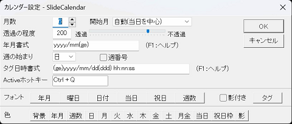

SlideCalendar
- DVD再生で画像が真っ黒になり表示されない現象について
- SlideCalendarを左位置に表示し透過設定で起動している時にDVD再生を行うと、画像が真っ黒で表示されない場合があることがわかりました。
- この現象が出る場合は、SlideCalendarの表示位置をずらすか、環境設定で透過の程度を255の不透過としてみて下さい。
- ※参考情報
- 機能説明
- 画面の端に貼り付きスライドして現れるカレンダーです。
- 画面イメージ
- メニュー
- 自動的に隠す
- 通常はマウスを離せば画面の端に隠れますが、チェックを外すと隠れなくなります。
- カレンダー設定
- 表示位置
- 左・右・上・下から選択して貼り付き位置を設定します。
- 反応速度
- 画面の端に隠れているときにマウスカーソルに反応して表示するまでの時間をミリ秒で設定します。
- 開閉速度
- Screenの端まで使用
- 全体のサイズをカレンダーのあるところまでとするかScreenの端までとするかを設定します。
- 座標(0,0)対策
- Screenの端まで使用するの時、開始位置を１ドットずらす設定とします。
- ※透過の程度を255以外として使用して、DVDを再生した時にDVD画面が真っ暗となる場合に設定してみて下さい。
- タグ表示
- タグのみに反応
- 画面の端に隠れた時にマウスに反応する箇所をタグ部のみとするかどうかを設定します。
- タグに日付時刻を表示
- 画面の端のタグに日付・時刻を表示するかどうかを設定します。
- 起動時ポップアップ表示
- 起動時に当日のメモ登録がある時にポップアップ表示を行うかどうかを設定します。
- 起動時ポップアップは×で閉じる
- スタートアップに登録
- SlideCalendarをスタートアップに登録します。
- 終了
- 設定項目

- 月数
- 開始月
- 表示を開始する月を設定します。自動の時、当月が中心となる様にします。月数が偶数の時は、当日の日付が1日から15日までと、16日以降で開始月が1ヶ月ズレます。
- 透過の程度
- 背景を透過させる程度を0から255までで設定します。0で完全に透過し、255で完全に不透過となります。
- 年月書式
- 年月の表示書式を設定します。
yyyy 西暦年4桁
yy 西暦年2桁
m 月（0無し）
mm 月2桁
g 年号省略形
gg 年号
e 和暦年（0無し）
ee 和暦年2桁
- 週の始まり
- Activeホットキー
- キーボード操作でカレンダーを呼び出すキーの組み合わせを設定します。
- タグ日時書式
- タグに表示する日時の表示書式を設定します。
yyyy 西暦年4桁
yy 西暦年2桁
m 月（0無し）
mm 月2桁
d 日（0無し）
dd 日2桁
s 秒（0無し）
ss 秒2桁
g 年号省略形
gg 年号
e 和暦年（0無し）
ee 和暦年2桁
ddd 曜日(省略形:日～土)
dddd 曜日(完全形:日曜日～土曜日)
- フォント
- 各部の表示色を設定します。
年月 年月部のフォント・サイズ・色
曜日 曜日部のフォント
日付 日付部のフォント
当日 当日のフォント・色
祝日 祝日のフォント・色
タグ タグのフォント・色
- 影付き
- カレンダー表示部の文字に影を付けて表示するかどうかを設定します。
- 色
- 各部の表示フォントを設定します。
背景 背景色
年月 年月部
日曜 日曜
土曜 土曜
月金 月曜から金曜
当日 当日
祝日枠 祝日マーク
影 影。文字色と指定色の中間色となります。
- 操作
- 実行はEXEファイルを開くだけです。
- 初期起動時は画面の左端に貼り付きますので、マウスカーソルを合わせるとカレンダー画面が表示されます。
- 画面幅・高さを変更することで、フォントサイズを変更できます。
- 日付の上でダブルクリックをすると、メモを登録できます。上段には当日のメモを、下段には記念日のような毎年のメモを登録することができます。
- 表示された画面上で右クリックをするとメニューが表示されます。
- 画面上部の移動ボタン（<<<、>>他）で表示年月を移動します。中央のボタンで初期表示月に戻せます。マウスカーソルを合わせると説明が表示されます。
- 休日およびメモ登録日の上部にマウスカーソルがくると内容が表示されます。
- 起動時オプション
- 動作環境
- 動作確認済み環境
- Windows 11 Pro(64ビット)
- Windows 10 Pro(64ビット)
- 開発環境
- Windows 11 Pro(64ビット)
- Delphi 10.4 Community Edition
- ライセンスについて
- 本製品はフリーウエアです。使用に際してライセンス登録／費用などは一切必要ありません。
- 再配布について
- 本製品の著作権は 北村 に属します。
- 基本的に再配布は自由です。再配布の際は、当方で配布しているファイル形式をそのままで配布してください。配布の際の報告などは義務づけません。
- 免責
- 本製品の使用により生じるいかなる損害に対してもその法的根拠に関わらず作者は責任を負いません。これに不服がある場合は本製品を利用しないで下さい。
- 連絡先
- 謝辞
- 以下のモジュールを使用させていただきました。ありがとうございます。
- 履歴
- -- Ver 2.28.43 2022/03/20 -- (当サイトでのみ公開中)
- -- Ver 2.28.42 2022/03/19 -- (当サイトでのみ公開)
- カレンダーの幅が小さいときに初期表示月に戻すボタンが隠れてしまうことがあったのを修正。
- 起動時ポップアップは×で閉じる設定を追加。
- コンパイラバージョンを10.4に変更。
- -- Ver 2.27.41 2021/07/19 -- (当サイトでのみ公開)
- 解像度変更でタグフォントサイズが元の解像度に比して変換されないことがあったのを再修正。
- -- Ver 2.27.40 2021/02/23 -- (当サイトでのみ公開)
- 政府の愚策につきあわされ祝日判定コードを最新版に変更。
- タグフォントサイズ確認用のdebugログ出力版
- -- Ver 2.26.40 2021/02/07 --
- 解像度変更でタグフォントサイズが元の解像度に比して変換されないことがあったのを修正。
- 変更点不明
- -- Ver 2.25.39 2020/12/12 -- (当サイトでのみ公開)
- 表示位置を右にしたとき、タグ表示文字が描画されなくなっていたのを修正。
- -- Ver 2.25.38 2020/11/29 -- (当サイトでのみ公開)
- タグ表示が数字1に合わせてズレるのを解消してみた。
- -- Ver 2.25.37.2 2020/11/16 -- (当サイトでのみ公開)
- ダウンロードファイルがウイルス検知されるため、ダウンロードファイルを修正（様子見）。
- -- Ver 2.25.37 2020/11/01 -- (当サイトでのみ公開)
- タグ色が未設定のとき、想定外の色になっていたのを修正。
- Program filesフォルダへのインストールでINIファイルへのアクセス拒否が発生するようになっていたのを修正。
- -- Ver 2.25.36.1 2020/10/31 -- (当サイトでのみ公開)
- セットアップが古いモジュールのまま更新されていなかったのを修正。
- -- Ver 2.25.36 2020/10/31 -- (当サイトでのみ公開)
- フォントの年月設定変更が保存されていなかったのを修正。
- -- Ver 2.25.35 2020/10/24 -- (当サイトでのみ公開)
- 高DPIモニタでカレンダー設定画面が大きくなりすぎていたのを修正。
- -- Ver 2.25.34 2020/09/13 -- (当サイトでのみ公開)
- 画面外表示と判断した際に表示座標をゼロ座標にリセットしていたが、マルチモニターのときにスクリーン全体の端位置となるように修正。
- -- Ver 2.25.33 2020/09/06 -- (当サイトでのみ公開)
- 起動時ポップアップ表示の設定に関係なくポップアップ表示してしまっていたのを修正。
- -- Ver 2.25.32 2020/08/26 -- (当サイトでのみ公開)
- メモ登録後、タスクバーにアイコンが残ってしまっていたのを修正。
- -- Ver 2.25.31 2020/06/05 --
- 高DPIモニタ設定に対応。
- メッセージ、年月をカレンダと同じフォントサイズで表示するようにした。
- 自動的に隠す設定を外したとき、直後に隠れてしまうことがあったのを修正。
- 自動的に隠す設定を外しているとき、カレンダー設定を行う際に自動的に隠すに設定を戻していたのを、戻さないようにした。
- メインフォームにフォーカスがない時にもポップアップ表示を行うようにした。
- -- Ver 2.24.30 2019/09/27 -- (当サイトでのみ公開)
- 表示位置が上のとき、起動時ポップアップが表示されなく（枠外での表示に）なっていたのを修正。
- 起動時ポップアップ表示で表示位置が左以外のときに吹き出しの向きを表示位置に合わせるようにした。
- -- Ver 2.23.29 2019/01/20 -- (VECTORにて公開中)
-
DOWNLOAD (VECTORにJump)
- マルチモニターに暫定対応した。サイズ違いのモニターを使用する場合には大きいサイズに合わせての動作となるため、要注意。
- タグの日付書式設定を変更しても反映されないことがあったのを修正。
- ウィンドウズが高負荷になった状態で勝手にカレンダーが開くことがあったのを修正（Form.Resizeイベントが飛んできていた）。
- 祝日判定コード ktHolidayNameを最新版に変更。
- 起動直後の表示位置変更で、画面位置が自由に変更できていたのを表示位置に張り付いての変更になるように修正。
- -- Ver 2.22.28 2018/01/08 --
- 当日メモと毎年メモが重なるとき、両方のマークを表示するように修正。当日メモを優先する。
- -- Ver 2.22.27 2017/09/10 -- (当サイトでのみ公開)
- -- Ver 2.21.27 2016/07/11 -- (当サイトでのみ公開)
- 祝日判定コード ktHolidayNameを山の日対応版に変更。
- 2.20.27の修正の再修正。
- -- Ver 2.20.27 2015/05/30 -- (当サイトでのみ公開)
- -- Ver 2.20.26 2015/01/12 --
- タグに日付時刻を表示する設定ので、起動時にタグの高さ（幅）が日付時刻無し時のままで日付時刻が表示されないことがあるのを修正。
- -- Ver 2.20.25 2013/12/23 -- (当サイトでのみ公開)
- -- Ver 2.19.25 2013/05/22 -- (当サイトでのみ公開)
- 起動した時と日付が変わっても当日が変わらなくなっていたのを修正。
- -- Ver 2.19.24 2013/05/09 -- (当サイトでのみ公開)
- -- Ver 2.19.23 2013/05/03 -- (当サイトでのみ公開)
- -- Ver 2.18.23 2013/05/03 -- (当サイトでのみ公開)
- 当日が祝日の時、当日の表示ができていなかったのを修正。
- 当日の表示方法をアンダーバー表示から背景塗りつぶしに変更。
- 環境設定の画面イメージで当日表示を確認できるように変更。
- -- Ver 2.17.22 2012/09/09 -- (VECTORにて公開)
- -- Ver 2.16.22 2010/11/14 -- (当サイトでのみ公開)
- タグの日付書式を変更した後、タグの大きさが元のままとなっていたのを修正。
- -- Ver 2.16.21 2010/10/30 -- (当サイトでのみ公開)
- タグに表示する日時の書式を設定できる様にした。
- 各色設定のUIを変更した。
- 当日表示を下線マーク表示に変更した。
- -- Ver 2.15.21 2010/04/15 -- (VECTORにて公開)
- -- Ver 2.14.21 2009/08/30 -- (当サイトでのみ公開)
- キーボードショートカットで表示中のカレンダーを隠せる様にした。
- -- Ver 2.13.21 2009/08/26 -- (当サイトでのみ公開)
- タブに日付・時刻を表示できる様にした。
- キーボードショートカットで呼び出せる様にした。
- -- Ver 2.12.21 2008/09/21 -- (VECTORにて公開)
- タブにバージョンを表示する様にした。
- メッセージに表示する内容が無いとき、時計を表示する様にした。
- -- Ver 2.11.21 2008/06/10 -- (当サイトでのみ公開)
- 記念日のみの登録では起動時ポップアップ表示が機能しなかったのを修正。
- -- Ver 2.11.20 2008/05/26 -- VECTORにて公開)
- 起動時ポップアップ表示が機能しなくなっていたのを修正。
- -- Ver 2.11.19 2008/03/18 -- (VECTORにて公開)
- アプリケーションがアクティブになった際にはカレンダーを表示していたのをやめて、カレンダーがクリックされてアクティブになった時にだけ表示する様に修正。
- -- Ver 2.11.18 2008/02/21 -- (当サイトでのみ公開)
- 反応速度の設定を行うとメニューの表示文字が間違って表示されてしまうのを修正。
- -- Ver 2.11.17 2007/10/20 -- (当サイトでのみ公開)
- 記念日を登録できる様にした。
- 起動時ポップアップ表示でメモ内容を改行表示する様に修正。
- -- Ver 2.10.16 2007/07/29 -- (当サイトでのみ公開)
- 休止状態からの復帰時に日付が変わっていても当日色が変わっていなかったのを修正。
- -- Ver 2.09.16 2007/07/15 -- (当サイトでのみ公開)
- 起動時ポップアップ表示を行うかどうかの設定メニューを追加した。
- タグのみに反応メニューを追加した。
- -- Ver 2.08.16 2007/06/23 -- (当サイトでのみ公開)
- 地域と言語の設定で短い日付形式が変更されていた時にエラーとなっていたのを修正してみた。
- 当日のメモをヒント表示した際にタブの表示が隠れて消えてしまったままになっていたのを修正してみた。
- -- Ver 2.08.15 2007/06/18 -- (当サイトでのみ公開)
- 起動後マウスカーソルをカレンダー部に持ってくるまでCPU使用率が100%となってしまっていたのを修正。
- 表示位置を左・右としている時、カレンダーの幅を広げる設定にしても再起動すると元の幅に戻ってしまっていたのを修正。
- -- Ver 2.08.14 2007/06/17 -- (当サイトでのみ公開)
- 本日のメモに本日日付を表示する様にした。
- 反応速度の設定をメニューに移した。
- カレンダー設定中にアプリのアクティブが変更されるとカレンダーが表示されてしまっていたのを修正。
- -- Ver 2.07.13 2007/06/16 -- (当サイトでのみ公開)
- 起動時に当日のメモ登録がされていればヒント表示する様にした。
- -- Ver 2.06.13 2007/06/09 -- (VECTORにて公開中)
- 非アクティブ時にマウスカーソルが画面上に有るとき、CPU使用率が高くなりつづけていたのを修正。
- 表示位置を上・下としていると終了するたびにサイズが小さくなってしまっていたのを修正。
- -- Ver 2.06.12 2007/06/05 -- (当サイトでのみ公開)
- -- Ver 2.05.12 2007/06/03 -- (当サイトでのみ公開)
- 時折前面でなくなる事があるので、できる限り前面となる様にしてみた。
- -- Ver 2.05.11 2007/06/02 -- (VECTORにて公開)
- 閉じている時にマウスIn以外の要因でActiveになった時に閉じたままとなってしまっていたのを、開く様に修正。
- -- Ver 2.05.10 2007/06/02 -- (当サイトでのみ公開)
- 画面がActiveでない時に、メモ登録日・祝日にマウスカーソルを合わせるとヒント表示される様にした。
- -- Ver 2.04.10 2007/05/26 -- (当サイトでのみ公開)
- メモをクリアした後エラーになっていたのを修正。
- 日付が変わっても当日日付が前日のままとなっていたのを修正。
- -- Ver 2.04.09 2007/05/22 -- (当サイトでのみ公開)
- メモに空白を含む場合、上部メッセージ欄にダブルコーテーションで挟まれてメッセージが表示されてしまっていたのを修正。
- -- Ver 2.04.08 2007/05/21 -- (当サイトでのみ公開)
- 開閉速度に０(ゼロ)を指定しようとすると入力エラーとなってしまっていたのを修正。
- 休日およびメモ登録日のヒント表示対応。
- -- Ver 2.04.07 2007/05/20 -- (当サイトでのみ公開)
- カレンダーの無い部分を画面として使用しない設定を可能とした。
- 表示位置を上・下にも可能とした。
- 開閉速度の設定を可能とした。
- Screenの端まで使用しない時、画面のドラッグで表示開始位置を設定可能とした。
- -- Ver 1.04.07 2007/05/19 -- (当サイトでのみ公開)
- 開始月の指定で自動以外を指定しているにも関わらず当日日付が16日以降の時、開始月が１ヶ月ズレていたのを修正。
- -- Ver 1.04.06 2007/05/06 -- (当サイトでのみ公開)
- 開始月の指定に固定月からの設定を追加した。
- カレンダー幅の変更が保存されない事があったのを修正。
- カレンダー幅の変更を繰り返すとどんどんフォントサイズが小さくなってしまっていたのを修正。
- -- Ver 1.03.05 2007/05/06 -- (当サイトでのみ公開)
- 開始月を指定できる様にした。
- 年月移動ボタンの中央に初期表示月に戻すボタンを追加した。
- 貼り付き位置の移動は右クリックメニューからに変更した。
- -- Ver 1.02.05 2007/03/10 -- (当サイトでのみ公開)
- -- Ver 1.01.05 2007/02/22 -- (VECTORにて公開)
- 開始曜日を日曜以外にした時に月の最初の方の日付が表示されないことがあったのを修正。
- -- Ver 1.01.04 2007/02/17 --
- 環境設定直後、年月表示がダブることがあったのを修正。
- 二重起動不可に修正。
- -- Ver 1.01.03 2007/02/12 --
- 週の始まりの曜日を指定できる様にした。
- また曜日別の色も月から金まで指定可能にした。
- -- Ver 1.00.03 2007/02/02 --
- PCによって、環境設定を閉じたときタスクバーにアイコンが残る事があったのを、残らない様に修正。
- -- Ver 1.00.02 2007/02/01 --
- 直前の変更内容で反映モレがあったのを修正。
- 移動エリアをドラッグして表示位置を移動した際に位置の変更を保存していなかったのを修正。
- 反応速度の設定が有効にならない事があったのを修正。
- -- Ver 1.00.01 2007/01/31 --
- 環境設定を閉じたとき、カレンダー画面を表示させる様にした。
- メモ登録画面の表示中はタスクバーにアイコンを表示する様にした。
- -- Ver 1.00.00 2007/01/27 --
戻る
いきなりこのページにきてしまった人は、
ここからTOPへ
どうぞ